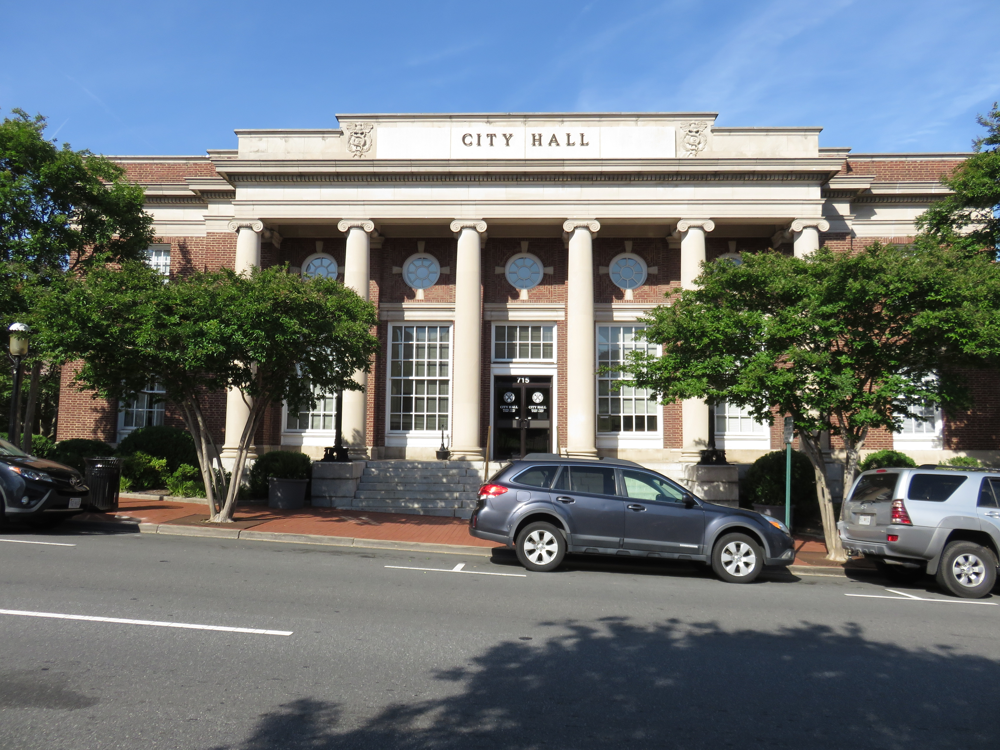

Fredericksburg Council, Tuesday, November 10: the Area 8 Dixon Street / Mayfield plan, a $60 million water and sewer bond, and a start on retail cannabis zoning
The latest Council sitting with a posted agenda and packet. Public hearings: 6A, a new Small Area Plan for Planning Area 8 (a 2025 Comprehensive Plan amendment) and a first-read ordinance rezoning about 33.14 acres from Residential-4, Industrial-1 and Commercial Highway to the Creative Maker District; 6B, a private storm sewer easement on the James Monroe High School grounds; 6C, first read of a water and sewer system revenue bond not to exceed $60,000,000. City Manager items: 11A affirms the Architectural Review Board’s certificate for removing a retaining wall at 138 Caroline Street; 11B, a first-read Fredericksburg Regional Transit FY2027 budget amendment; 11C and 11D start Chapter 72 code amendments to permit retail cannabis and to update affordable housing rules for religious and nonprofit tax-exempt properties, both following changes to the Code of Virginia. Council member item: Dixon Park Connector (Councilman Mackintosh). Consent: the Albertsons opioid settlement. VOTE: minutes not posted. This porch does not print outcomes the Clerk has not posted.